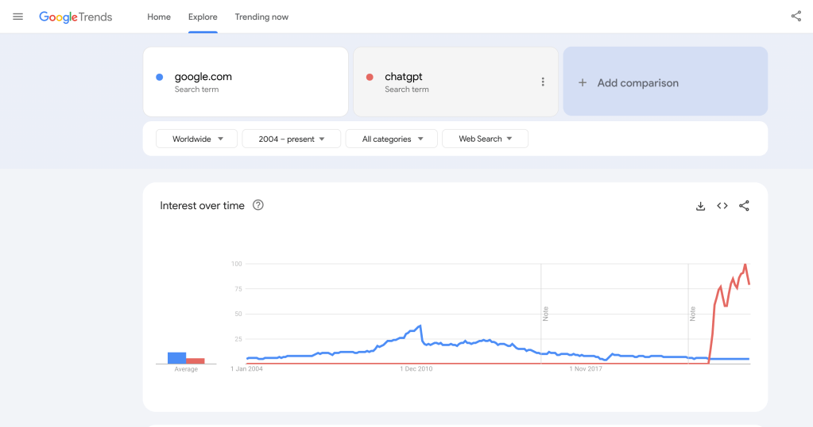
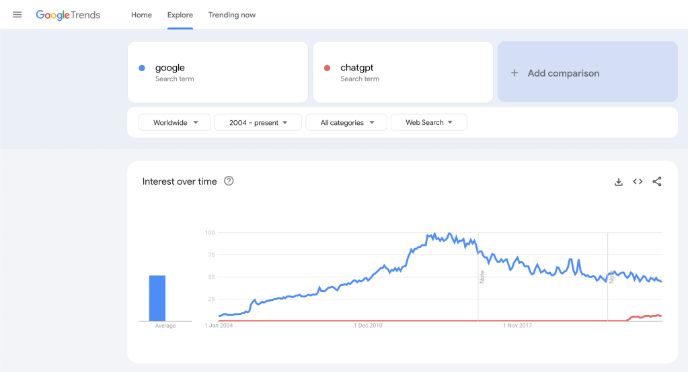

A Comparative Analysis of Google.com and ChatGPT Search Trends: A Google Trends Insight


Introduction
In the digital age, search trends provide a fascinating glimpse into the collective interests and curiosities of people worldwide. Google Trends is a powerful tool that allows us to visualize these trends over time. In this post, we'll examine the search interest over time for two terms: "google.com" and "chatgpt" from 2004 to the present.
Google.com: A Steady Interest
The blue line in our Google Trends graph represents the search interest for "google.com." As expected, Google, being the most widely used search engine, has maintained a consistent level of interest over the years. The graph shows a slight increase in interest until around 2010, after which it stabilizes with minor fluctuations. This stability reflects Google's established position in the market and its role as a go-to resource for internet users.
ChatGPT: A Rising Star
In stark contrast, the red line representing "chatgpt" shows a dramatic rise starting around November 2022. This surge coincides with significant advancements and increased public interest in OpenAI's language model, ChatGPT. The rapid increase in search interest highlights the growing fascination with artificial intelligence and conversational agents.
Comparative Insights
-
Initial Period (2004-2022): During this time, "google.com" dominates the search interest with a steady presence, while "chatgpt" remains virtually non-existent in the search landscape.
-
Emergence of ChatGPT (Post-November 2022): The graph shows a sharp rise in search interest for "chatgpt," surpassing "google.com" by a considerable margin. This period marks a significant shift in public interest towards AI technologies.
Implications of the Trends
The contrasting trends between "google.com" and "chatgpt" reveal several key insights:
-
Enduring Relevance of Google: Despite the surge in interest for AI technologies, Google remains a fundamental tool for internet users. Its steady search interest indicates its entrenched role in our daily online activities.
-
Rising Curiosity in AI: The spike in "chatgpt" searches underscores a growing curiosity and engagement with AI-driven tools. This trend suggests an increasing awareness and interest in the capabilities and applications of AI.
-
Technological Shifts: The rapid rise of ChatGPT highlights how quickly technological advancements can capture public interest. It also points to a potential shift in how users interact with digital platforms, moving from traditional search engines to more interactive AI systems.
Conclusion
The Google Trends analysis of "google.com" and "chatgpt" provides a fascinating window into the evolving landscape of internet search behavior. While Google continues to hold its ground as a staple in the digital world, the meteoric rise of ChatGPT signals a burgeoning interest in AI technologies. As these trends evolve, they will undoubtedly shape the future of digital interactions and information retrieval.
By keeping an eye on these trends, we can gain valuable insights into the shifting dynamics of internet use and the technologies that captivate our collective attention.
Call to Action
What are your thoughts on the rise of AI technologies like ChatGPT? Do you find yourself using AI tools more frequently? Share your experiences and insights in the comments below!
Image Description
The image attached to this post shows a Google Trends graph comparing the search interest for "google.com" and "chatgpt" from 2004 to the present. The graph highlights a steady interest in "google.com" (blue line) and a dramatic rise in "chatgpt" (red line) starting around November 2022.
Feel free to share this post with others who might find these insights intriguing. Stay tuned for more analyses on the latest digital trends!
Reference
https://trends.google.com/trends/explore?date=all&q=google.com,chatgpt&hl=en-GB
Imported from rifaterdemsahin.com · 2024